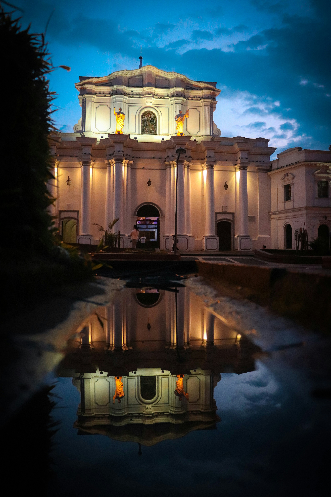

Popayán es una ciudad del oeste de Colombia, al suroeste de Bogotá. Es conocida por sus edificios coloniales encalados y por ser un centro religioso con procesiones populares en Semana Santa. Las iglesias principales de la ciudad incluyen la Catedral Basílica de Nuestra Señora de la Asunción, de estilo neoclásico y con una cúpula, y la Iglesia de La Ermita, del siglo XVII. En el corazón de la ciudad, se encuentra el Parque Caldas arbolado, donde hay una torre del reloj del siglo XVII.